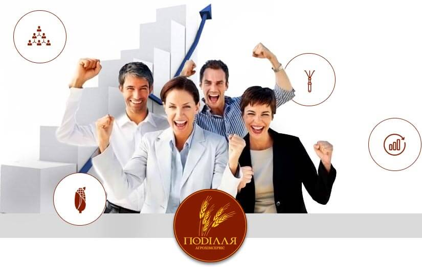

Про компанію
Про компаніюПП «Поділля-Агрохімсервіс» — молода дистриб’юторська компанія, що активно розвивається.

Основні напрямки діяльності підприємства: — продаж насіння соняшника, кукурудзи, пшениці, сої, ріпаку, ячменю, цукрових буряків та деяких інших культур; — продаж засобів захисту рослин (гербіциди, фунгіциди, інсектициди, протруйники, регулятори росту, десиканти та інш.); — продаж макро- та мікродобрив; — агрономічний супровід господарств-партнерів. Приватне підприємство «Поділля-Агрохімсервіс» засноване в 2009 році. З того часу підприємство впевнено зайняло своє місце на аграрному ринку, розширило сфери діяльності і зарекомендувало себе, як, надійний та стабільний партнер. Нашими постійними клієнтами є аграрні підприємства, розташовані у Вінницькій, Черкаській, Кіровоградській, Миколаївській, Одеській, Київській, Львівській та Івано-Франківській областях. Ми пропонуємо виключно якісні продукти світових і європейських виробників, гарантуючи покупцеві високу якість.
НАСІННЯ
Ми пропонуємо своїм клієнтам високоякісну продукцію від кращих світових та європейських селекційних компаній: Syngenta, Pioneer, Monsanto, Euralis, Maisadour, Kitchen Seed, Limagrain, Caussade semences, Novi Sad та інших. Підприємство також реалізує продукцію вітчизняних виробників насіння, зокрема: Насіннєва компанія ВНІС; ТОВ Агрофірма «Росава»; ТОВ «Зоря- Маїс Насіння»; ТОВ «НВП «Агро-Ритм»; ТОВ «НВК «Сівер» та інші. В своєму арсеналі маємо насіння озимої і ярої пшениці, а також озимого та ярого ячменю таких селекційних установ: Інститут фізіології та генетики рослин НААН України; Миронівський інститут пшениці ім. В.М. Ремесла; Одеський селекційно-генетичний інститут; Білоцерківська дослідно-селекційна станція; Донецький інститут агропромислового виробництва НААН; Інститут землеробства УААН; Інститут кормів УААН, Вінниця; ТОВ «РАПСОІЛ» та інші. Наші спеціалісти допоможуть Вам підібрати насіння, враховуючи грунтові і кліматичні особливості конкретного регіону, а також нададуть агрономічний супровід аж до збору врожаю. Ми гарантуємо своїм клієнтам не лише високу якість продукції, але й вигідні умови співпраці, своєчасну доставку та товарне кредитування.
ЗАСОБИ ЗАХИСТУ РОСЛИН
ПП «Поділля-Агрохімсервіс» охоплює основний спектр засобів захисту рослин для більшості сільськогосподарських культур. А саме: — Гербіциди (захист культурних рослин від бур’янів); — Інсектициди (захист культурних рослин проти шкідливих організмів); — Фунгіциди (захист культурних рослин від хвороб); — Регулятори росту (стимулятори росту рослин); — Протруйники насіння (захист насіння від хвороб та шкідників); — Родентициди (боротьба з гризунами) ПП «Поділля-Агрохімсервіс» пропонує якісні продукти світових і європейських виробників, таких як BayerCropScience, Syngenta, BASF, DuPont, Nufarm, Monsanto, ArystaLifeSaience, Самміт-Агро Юкрейн, Мактешим-Аган та ін., гарантуючи покупцеві найвищу якість та безпечність щодо впливу на навколишнє середовище. Паралельно з цим, для окремого сегменту клієнтів, підприємство реалізує так звані генеричні препарати наступних виробників: ТОВ «Агрохімконтракт»; ТОВ «Агрохімічні технології»; ТОВ «Альфа Хімгруп»; ТОВ «АПК-Сервіс»; ТОВ «Презенс», Україна; ТОВ «Укравіт» ІП «БЕСТ» та інші.